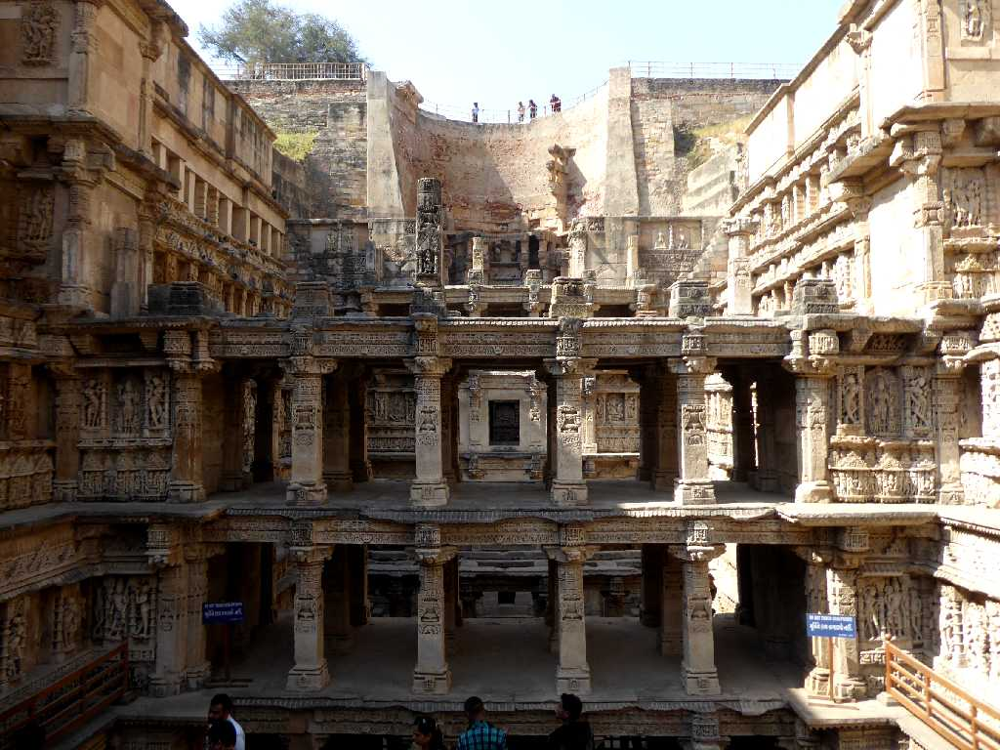
Rani ki Vav (Queen step well) Patan
１１世紀にビーマディーバ Ⅰ 世を偲んで王妃ウダヤマティにより創られた７階建ての王妃の階段井戸
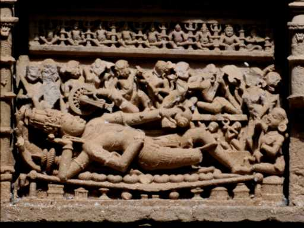
Vishnu Statue Rani ki Vav
グジャラート州周辺は水と結び付いた女神信仰が盛んでビシュヌ神など壁面には１,５００体もの彫像が彫られ大きな彫像は５００体におよぶ
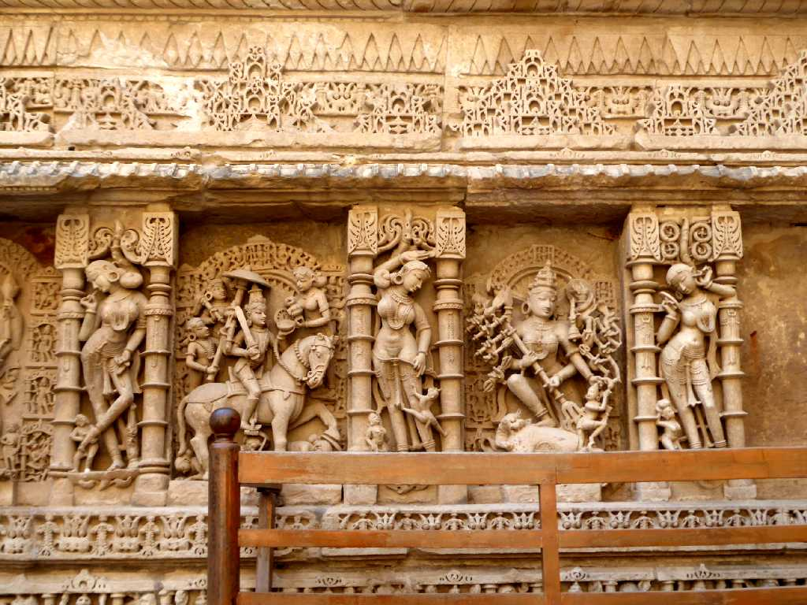
Statue Rani ki Vav
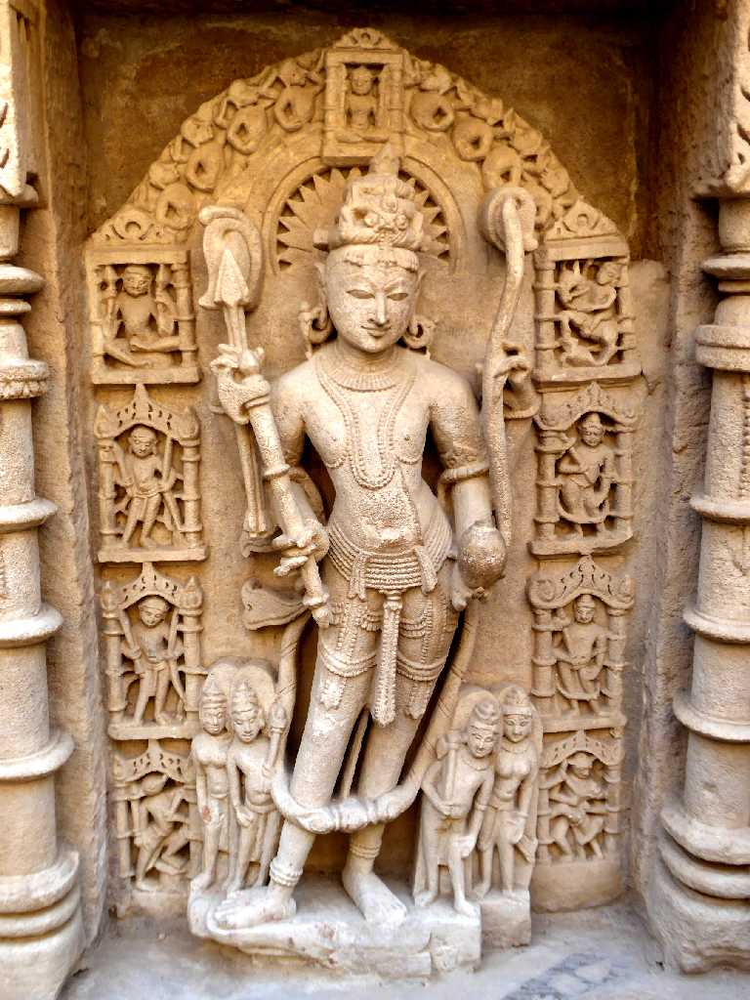 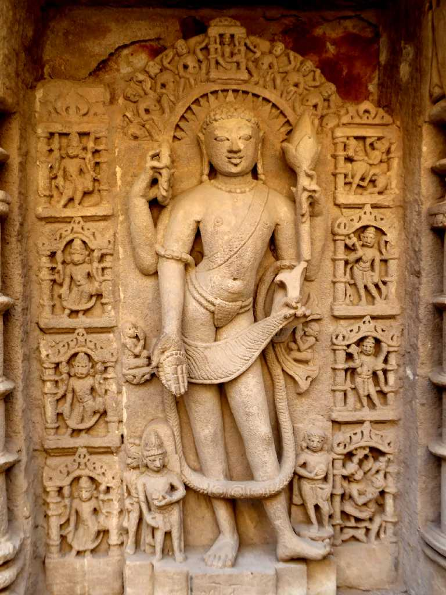
Statue Rani ki Vav
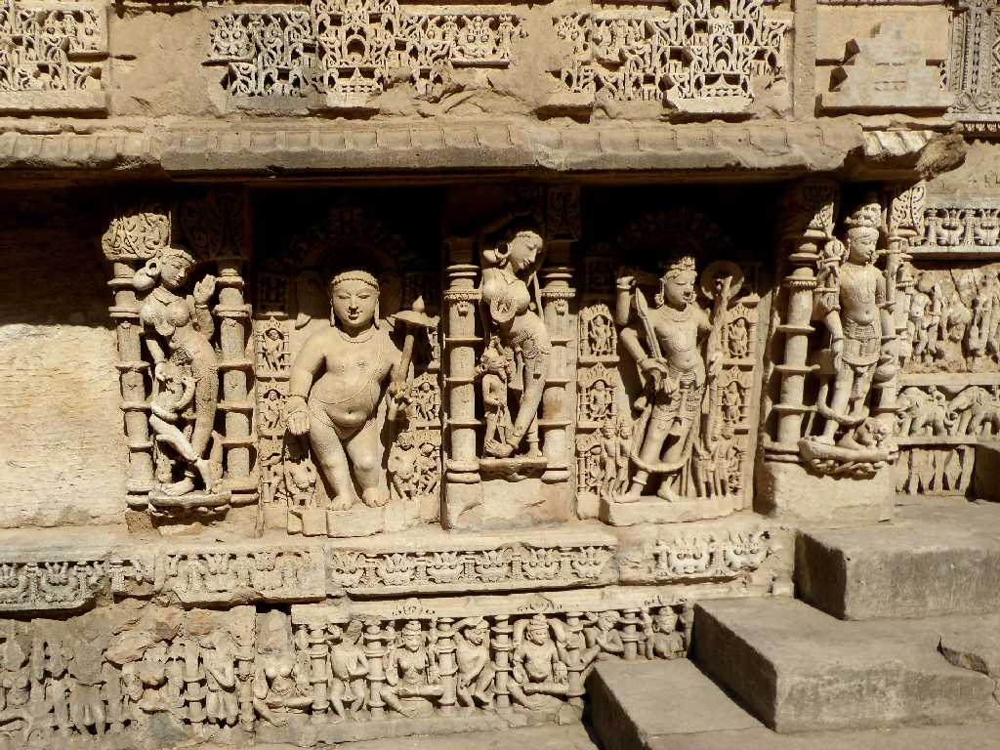
Statue Rani ki Vav
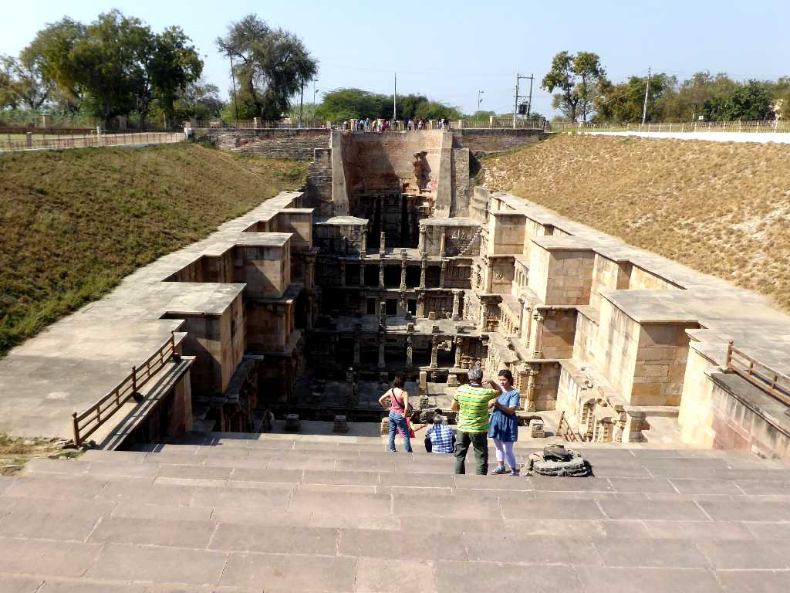
Rani ki Vav
現存する最古で最大級の階段井戸は長さ６５ｍ幅２０ｍ深さ２７ｍある
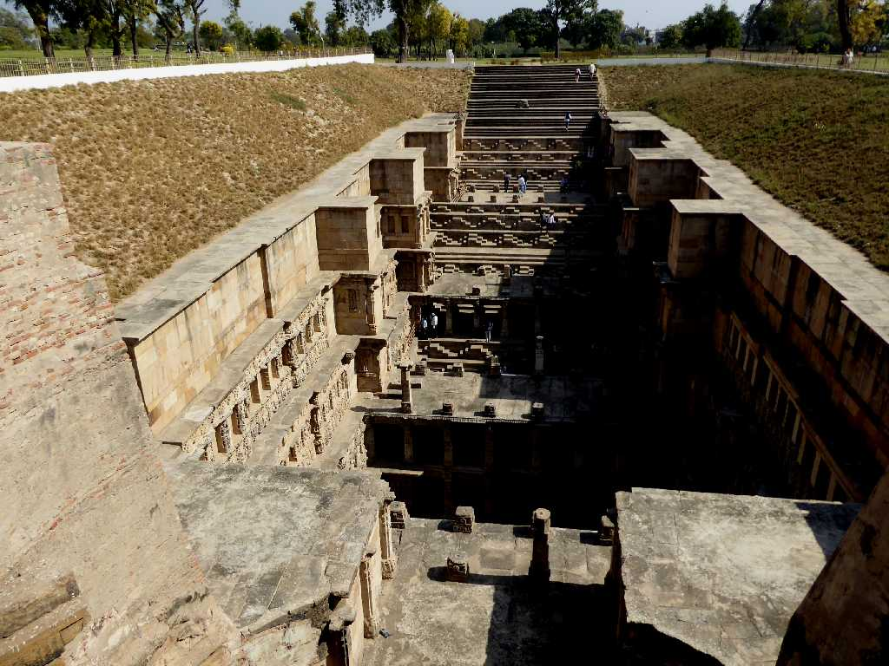
Rani ki Vav
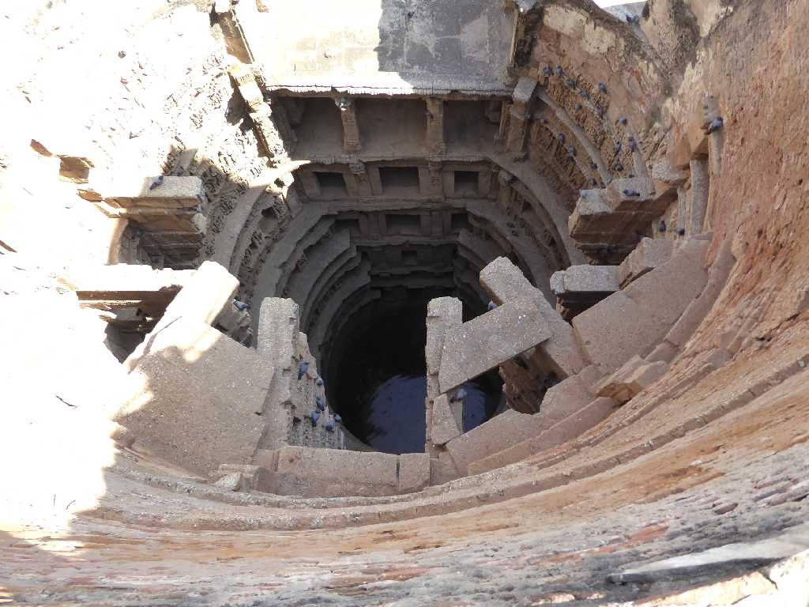
Well Rani ki Vav
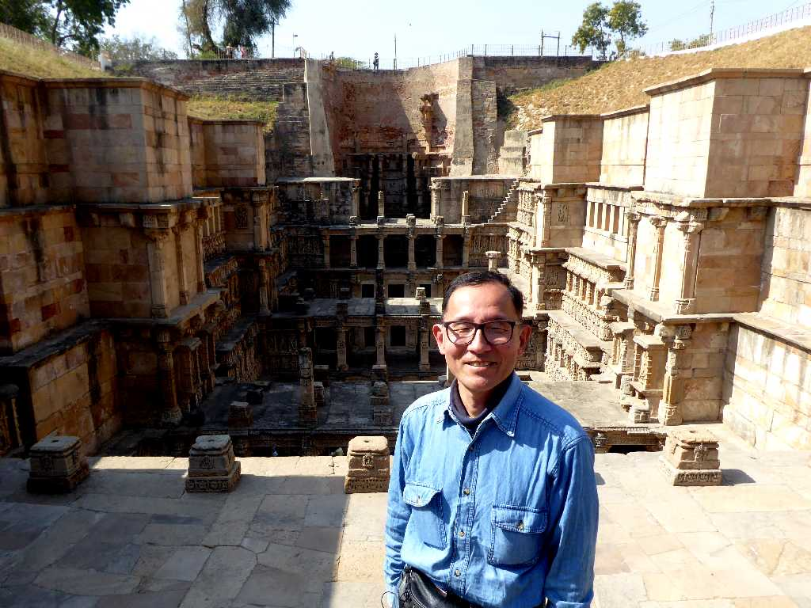
January 26 2018 Rani ki Vav
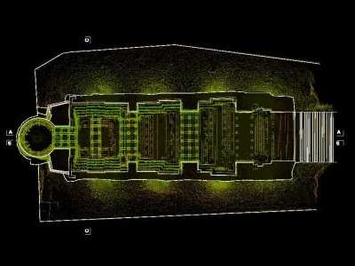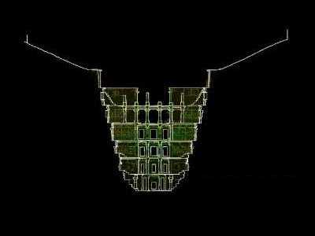
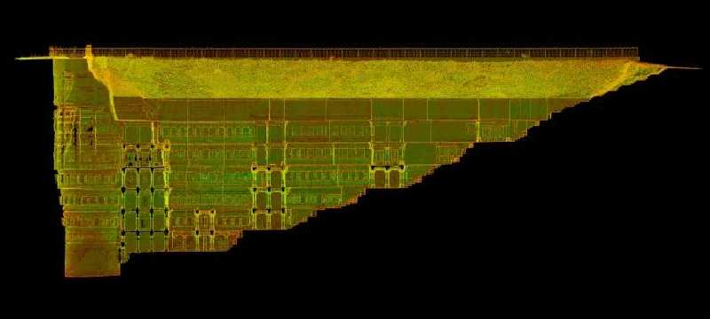